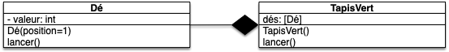

Projet composition et agrégation d'objets : dés
Dans les deux précédents projets dés, vous avez codé des classes toutes seules. Dans cette partie on va coder plusieurs classes enchevêtrées.
Pour les besoins de ce projet, nous allons présupposer que vous avez une classe Dé qui fonctionne. La version minimale que nous allons utiliser ici est disponible ci-après. Mais ne vous sentez pas obliger de l'utiliser.
une implémentation de la classe Dé
une implémentation de la classe Dé
fichier dé.py :
import random
class Dé:
MIN_VALEUR = 1
MAX_VALEUR = 6
def __init__(self, valeur=1):
self._valeur = valeur
valeur = property(lambda self: self._valeur)
def lancer(self):
self._valeur = random.randrange(self.MIN_VALEUR, self.MAX_VALEUR + 1)
return self
def __str__(self):
if self.valeur == 1:
return "⚀"
elif self.valeur == 2:
return "⚁"
elif self.valeur == 3:
return "⚂"
elif self.valeur == 4:
return "⚃"
elif self.valeur == 5:
return "⚄"
else:
return "⚅"
fichier test_dé.py :
import pytest
from dé import Dé
def test_init():
assert isinstance(Dé(), Dé)
def test_valeur():
assert Dé().valeur == 1
assert Dé(valeur=4).valeur == 4
def test_valeur_sans_setter():
with pytest.raises(AttributeError):
Dé().valeur = 1
def test_lancer():
dé = Dé()
dé.lancer()
assert Dé.MIN_VALEUR <= dé.valeur <= Dé.MAX_VALEUR
def test_str():
assert str(Dé()) == "⚀"
assert str(Dé(4)) == "⚃"
Il va nous falloir manipuler 5 dés ensemble pour atteindre le but de notre projet :
But du projet
Jouer au poker d'as.
Nous n'atteindrons pas ce but à la fin du projet, mais libre à vous de le continuer et de le finir.
5 dés
Méthode naïve pour manipuler 5 dés : la liste de dés.
Pour illustrer cette étape et progresser dans notre projet de jeu, faisons une petite user story :
User Story
- Nom : "jets de dés"
- Utilisateur : un joueur compulsif
- Story : On veut pouvoir lancer des dés et voir le résultat
- Actions :
- créer une liste
- créer 5 dés que l'on ajoute un à un à la liste
- lancer les 5 dés
- afficher chaque dés de la liste
Créez la user story dans le fichier story_jets.py
corrigé
corrigé
Fichier story_jets.py :
from dé import Dé
des_dés = []
for _ in range(5):
des_dés.append(Dé())
for d in des_dés:
d.lancer()
for d in des_dés:
print(d)
On aurait aussi pu créer directement la liste et les dés en utilisant une liste comprehension :
des_dés = [Dé() for _ in range(5)]Notez qu'il faut créer 5 dés différents.
Composition
L'utilisation d'une liste permet de grouper les 5 dés, mais il faut toujours les lancer individuellement. Cela pourrait être pratique de lancer automatiquement tous les dés.
Classe TapisVert
On aimerait avoir une structure, nommée TapisVert, qui :
- crée et stocke 5 dés
- permette de lancer les dés stockés en une fois avec une méthode
lancer - rendre les dés contenus dans sa structure via une liste ou un tuple
- Proposez une modélisation UML de cette classe, montrez la relation qu'elle entretient avec la classe
Dé. - modifier la user story "jets de dés" pour qu'elle utilise cette classe
corrigé
corrigé

story_jets.py :
from dé import TapisVert
tapis_vert = TapisVert()
tapis_vert.lancer()
for dé in tapis_vert.dés:
print(dé)Comme les classes TapisVert et Dé sont différentes elles peuvent toutes les deux implémenter une méthode lancer() :
Codez la classe TapisVert dans le fichier dé.py.
corrigé
corrigé
Fichier dé.py :
# ...
class TapisVert:
def __init__(self):
dés = []
for _ in range(5):
dés.append(Dé())
self.dés = tuple(dés)
def lancer(self):
for dé in self.dés:
dé.lancer()
# ...
Et on ajoute ses tests :
Ajoutez les tests de cette nouvelle classe au fichier test_dé.py. Vous pourrez par exemple tester :
- qu'après la création d'un objet
TapisVerton dispose bien de 5 dés de valeur 1. - qu'après avoir lancé les dés, leurs valeurs sont toujours cohérentes avec le nombre de faces.
corrigé
corrigé
Fichier test_dé.py :
# ...
def test_tapis_vert_creation():
tapis_vert = TapisVert()
for d in tapis_vert.dés:
assert d.valeur == 1
def test_tapis_vert_lancer():
tapis_vert = TapisVert()
tapis_vert.lancer()
for d in tapis_vert.dés:
assert 1 <= d.valeur <= 6
# ...
Affichage
On peut utiliser Dé.__str__() pour que TapisVert.__str__() soit facile à coder :
Créez une méthode TapisVert.__str__() qui permette d'écrire :
>>> from dé import TapisVert
>>> tapis_vert = TapisVert()
>>> print(tapis_vert)
⚀ - ⚀ - ⚀ - ⚀ - ⚀
>>> tapis_vert.lancer()
>>> print(tapis_vert)
⚀ - ⚁ - ⚁ - ⚀ - ⚁
>>>
corrigé
corrigé
On peut utiliser deux astuces python. La première est de construire une liste avec les représentations sous la forme d'une chaîne de caractères des dés. Par exemple :
>>> from dé import TapisVert
>>> tapis_vert = TapisVert()
>>>[str(x) for x in tapis_vert.dés]
['⚀', '⚀', '⚀', '⚀', '⚀']Puis utiliser la méthode str.join(itérable) de python qui est super utile pour concaténer des listes de chaînes de caractères (la doc dit : "Return a string which is the concatenation of the strings in iterable.") :
>>> l = ["coucou", "les", "amis"]
>>> "*".join(l)
'coucou*les*amis'Ces deux astuces nous permettent d'écrire le code :
class TapisVert:
# ...
def __str__(self):
return " - ".join([str(x) for x in self.dés])
# ...
Reconnaissance
Pour jouer au poker d'as, il nous faudra reconnaître des formes de jets de dés (comme les paires, ou encore les full). Créons une user story pour coder cette fonctionnalité :
User Story
- Nom : "formes de jets"
- Utilisateur : un joueur compulsif
- Story : On veut pouvoir savoir quelles formes de dés sont présentes
- Actions :
- jeter 5 dés
- vérifier s'il y a une paire, un brelan ou un carré
- recommencer en 1
Créez la story dans le fichier story_formes_dés.py.
Pour cela, l'utilisateur pourra appuyer sur la touche entrée pour lancer les dés d'un objet de type TapisVert, afficher les 5 dés et indiquer s'il y a une paire, un brelan ou un carré avec des méthodes TapisVert.possède_paire(), TapisVert.possède_brelan(), et TapisVert.possède_carré() qui rendent des booléens.
corrigé
corrigé
from dé import TapisVert
tapis_vert = TapisVert()
while True:
tapis_vert.lancer()
print(tapis_vert)
if tapis_vert.possède_paire():
print(" A une paire")
if tapis_vert.possède_brelan():
print(" A un brelan")
if tapis_vert.possède_carré():
print(" A un carré")
entrée = input("Appuyez sur la touche <entrée> pour recommencer")Et maintenant le code des différentes méthodes à implémenter :
Ajoutez dans TapisVert les méthodes nécessaires et testez-les en simulant des lancers ayant une forme particulière.
Pour coder cela de façon simple, vous pourrez coder deux méthodes supports :
- une méthode qui rend une liste $L$ de taille 7 telle que $L[i]$ donne le nombre de dés ayant la valeur $i$ ($1 \leq i \leq 6$)
- une méthode qui prend en paramètre un nombre $n$ et qui rend
Trues'il existe au moins $n$ dés ayant la même valeur. Ceci permettra de coder de la même manière les différentes fonctions demandées.
corrigé
corrigé
class TapisVert:
# ...
def _nombre_valeurs(self):
count = [0] * 7
for dé in self.dés:
count[dé.valeur] += 1
return count
def nb_dés_valeurs_identiques(self, nb):
comptes = self._nombre_valeurs()
for i in range(len(comptes)):
if comptes[i] >= nb:
return True
return False
def possède_paire(self):
return self.nb_dés_valeurs_identiques(2)
def possède_brelan(self):
return self.nb_dés_valeurs_identiques(3)
def possède_carré(self):
return self.nb_dés_valeurs_identiques(4)
Pour tester nos méthodes fraichement ajoutée on a un soucis. Si l'on veut tester plusieurs possibilités, il faut que l'on puisse manuellement modifier la valeur d'un dé (on ne peut pas utiliser la méthode lancer qui est non déterministe). On s'autorise donc à utiliser l'attribut privé _valeur. Comme les classes Dé et TapisVert, cela fait partie des choses autorisées si on ne peut pas facilement faire autrement, ce qui est le cas ici. On pourrait donc par exmple implémenter dans le fichier test_dé.py les deux tests suivant :
def test_tapis_vert_nombre_valeurs():
tapis_vert = TapisVert()
assert [0, 5, 0, 0, 0, 0, 0] == tapis_vert._nombre_valeurs()
tapis_vert.dés[2]._valeur = 4
assert [0, 4, 0, 0, 1, 0, 0] == tapis_vert._nombre_valeurs()
def test_tapis_vert_nb_des_identiques():
tapis_vert = TapisVert()
assert tapis_vert.nb_dés_valeurs_identiques(5)
assert tapis_vert.nb_dés_valeurs_identiques(4)
tapis_vert.dés[2]._valeur = 4
assert not tapis_vert.nb_dés_valeurs_identiques(5)Agrégation : Memento
Nous Allons créer un nouvel objet appelé permettant de sauver la valeur d'un dé puis de le restaurer si besoin. On va utiliser pour cela un patron de conception nommé Memento
Classe MementoDé
Le diagramme UML d'un Memento pour notre dé est le suivant :

Lors de sa création il sauve la valeur du dé et la restore lors de l'appel de sa méthode MementoDé.restore().
Créez la classe MementoDé dans le fichier dés.py.
corrigé
corrigé
class MementoDé:
def __init__(self, dé):
self.dé = dé
self.valeur_sauvée = dé.valeur
def restore(self):
self.dé._valeur = self.valeur_sauvée
Notez qu'il est nécessaire d'utiliser l'attribut privé _valeur pour remettre la valeur en place. Comme les 2 classes sont dans le même module c'est une pratique autorisée.
Créez un test possible pour la classe MementoDé.
corrigé
corrigé
from dé import Dé, TapisVert, MementoDé
# ...
def test_mementoDé():
dé = Dé()
dé._valeur = 5
memento = MementoDé(dé)
dé._valeur = 1
memento.restore()
assert dé.valeur == 5
Il est là aussi indispensable d'utiliser l'attribut privé dans nos tests.
Le Memento est un outil formidable pour créer des undo/redo !
Vous pourrez par exemple l'utiliser comme ça :
from dé import Dé, MementoDé
dé = Dé()
print(dé)
memento = MementoDé(dé)
dé.lancer()
print(dé)
memento.restore()
print(dé)
Classe MementoTapisVert
Finissons par mettre en oeuvre un Memento pour les TapisVert :
Créez la classe MementoTapisVert dans le fichier dés.py et son test dans le fichier test_dés.py
corrigé
corrigé
Fichier dés.py :
# ...
class MementoTapisVert:
def __init__(self, tapis_vert):
self.tapis_vert = tapis_vert
self.mémento_dés = [MementoDé(dé) for dé in tapis_vert.dés]
def restore(self):
for m in self.mémento_dés:
m.restore()
Fichier test_dés.py :
from dé import Dé, TapisVert, MementoDé, MementoTapisVert
# ...
def test_mementoTapisVert():
tapis_vert = TapisVert()
for dé in tapis_vert.dés:
dé._valeur = 5
memento = MementoTapisVert(tapis_vert)
for dé in tapis_vert.dés:
dé._valeur = 1
memento.restore()
for dé in tapis_vert.dés:
assert dé.valeur == 5
Vous pourrez par exemple l'utiliser comme ça :
from dé import TapisVert, MementoTapisVert
tapis = TapisVert()
memento_liste = []
print("0 :", tapis)
for i in range(1, 10):
memento_liste.append(MementoTapisVert(tapis))
tapis.lancer()
print(i, ":", tapis)
for _ in range(len(memento_liste)):
memento_liste.pop().restore()
print(len(memento_liste), ":", tapis)